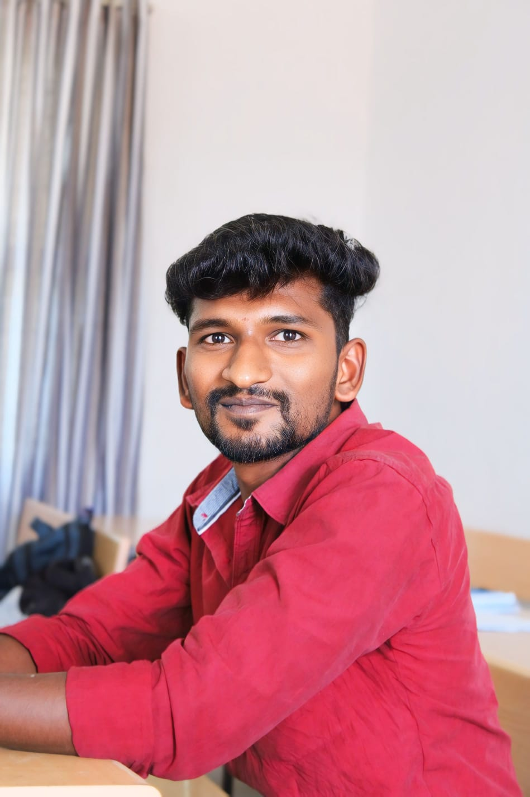

I am a motivated and enthusiastic developer with a focus on front-end technologies like HTML, CSS, JavaScript, and Angular, which I use to create engaging and responsive user interfaces. Alongside my front-end skills, I have experience in Java development and MySQL, giving me the ability to work with both the client and server sides of applications.
As a fresher, I am excited to start my career in a dynamic environment where I can continue to learn, grow, and contribute to meaningful projects. I am passionate about coding and eager to collaborate with a team to build innovative solutions that make a difference.
Download CV